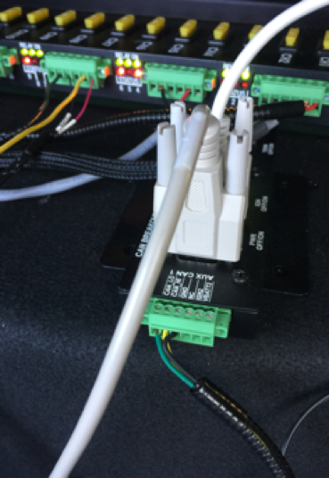
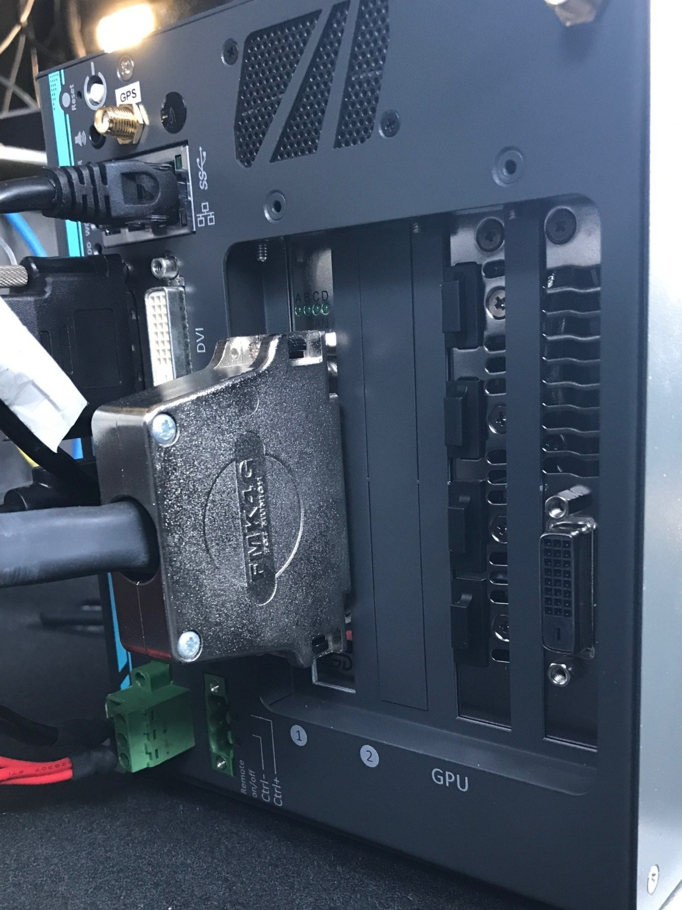

Apollo 1.5 硬件和系统安装指南¶
Apollo1.5硬件与系统安装指南 详细介绍了Apollo计划的硬件组件、系统软件安装，安装过程包含下载和安装Apollo Linux内核。
相比1.0的版本，1.5版本的参考硬件中，主要有以下区别：
IPC使用了另外一个型号 6108GC代替5095GC；
增加了激光雷达传感器，用以实现障碍物感知；
文档约定¶
本文档使用约定如下表：
图标 |
描述 |
|---|---|
粗体 |
重点强调 |
|
代码，类型数据 |
斜体 |
文件，部分和标题的标题使用的术语 |
|
Info 包含可能有用的信息。忽略信息图标没有消极的后果。 |
|
Tip. 包括有用的提示或可能有助于完成任务的快捷方式。 |
|
Online. 提供指向特定网站的链接，您可以在其中获取更多信息。 |
|
Warning. 包含不能忽略的信息，否则执行某个任务或步骤时，您将面临风险。 |
引言¶
阿波罗计划是为汽车和自主驾驶行业的合作伙伴提供开放，完整和可靠的软件平台。该项目的目的是使合作伙伴能够基于Apollo软件堆栈开发自己的自动驾驶系统。
文档¶
车辆：
工业计算机
GPS
IMU
CAN 卡
硬盘
GPS 天线
GPS 接收器
激光雷达
软件：
Ubuntu Linux 操作系统
Apollo Linux 内核
Nvidia GPU 驱动
关键硬件¶
需要安装的关键的硬件组件包括：
车载计算机系统，Neousys Nuvo-6108GC
CAN 卡 ESD CAN-PCIe/402-1
GPS IMU，可以从下面选择其一：
NovAtel SPN-IGM-A1
NovAtel SPAN® ProPak6™ and NovAtel IMU-IGM-A1
激光雷达，Velodyne HDL-64E S3
车载计算机系统，IPC¶
车载计算机系统是用于自动驾驶车辆的工业PC（IPC），并使用由第六代Intel Xeon E3 1275 V5 CPU强力驱动的NeousysNuvo-6108GC。
Neousys Nuvo-6108GC是自动驾驶系统（ADS）的中心单元。
IPC的配置¶
IPC配置如下：
ASUS GTX1080 GPU-A8G-Gaming GPU Card
32GB DDR4 RAM
PO-280W-OW 280W 交流、直流电源适配器
2.5” SATA Hard Disk 1TB 7200rpm
IPC前后视图¶
Nuvo-6108GC前视图：

Nuvo-6108GC后视图：

 中文介绍：http://www.neousys-tech.com/cn/product/application/rugged-embedded/nuvo-6108gc-gpu-computing
中文介绍：http://www.neousys-tech.com/cn/product/application/rugged-embedded/nuvo-6108gc-gpu-computing
Neousys Nuvo-6108GC 手册：还不可用。

GPS与IMU¶
对于GPS-IMU，有两个选择，取决于满足你的需求：
可选项1：NovAtel SPAN-IGM-A1
可选项2：NovAtel SPAN® ProPak6™ and NovAtel IMU-IGM-A1
NovAtel SPAN-IGM-A1¶
NovAtel SPAN-IGM-A1是一个集成的，单盒的解决方案，提供紧密耦合的全球导航卫星系统（GNSS）定位和具有NovAtel OEM615接收机的惯性导航功能。

 产品主页：
https://www.novatel.com/products/span-gnss-inertial-systems/span-combined-systems/span-igm-a1/
产品主页：
https://www.novatel.com/products/span-gnss-inertial-systems/span-combined-systems/span-igm-a1/
NovAtel SPAN ProPak6 and NovAtel IMU-IGM-A1¶
NovAtel ProPak6是独立的GNSS接收机，它与NovAtel提供的独立IMU（本例中为NovAtel IMU-IGM-A1）相融合以提供定位。
ProPak6提供由NovAtel生产的最新最先进的外壳产品。
IMU-IGM-A1是与支持SPAN的GNSS接收器（如SPAN ProPak6）配对的IMU。

 NovAtel ProPak6 安装与操作手册:
NovAtel ProPak6 安装与操作手册:
https://www.novatel.com/assets/Documents/Manuals/OM-20000148.pdf
 onlineNovAtel IMU-IGM-A1 产品主页:
onlineNovAtel IMU-IGM-A1 产品主页:
GPS天线、接收器¶
GPS-IMU组件的GPS接收器、天线使用的是NovAtel GPS-703-GGG-HV。
注意：GPS NovAtelGPS-703-GGG-HV与上文中提到的两个GPS-IMU选项的任一型号配合使用。

 NovAtel GPS-703-GGG-HV 产品主页:
NovAtel GPS-703-GGG-HV 产品主页:
https://www.novatel.com/products/gnss-antennas/high-performance-gnss-antennas/gps-703-ggg-hv/
激光雷达¶
使用来自Velodyne激光雷达公司的64线激光雷达系统HDL-64E S3。

主要特点:
64 Channels
120m range
2.2 Million Points per Second
360° Horizontal FOV
26.9° Vertical FOV
0.08° angular resolution (azimuth)
<2cm accuracy
~0.4° Vertical Resolution
User selectable frame rate
Rugged Design
 Velodyne HDL-64E S3介绍: http://velodynelidar.com/hdl-64e.html
Velodyne HDL-64E S3介绍: http://velodynelidar.com/hdl-64e.html
安装任务概览¶
安装硬件和软件组件涉及以下任务： 室内：
准备IPC：
检查图形处理单元（GPU）磁带，以确定是否需要卸下GPU卡（如果已预安装）
在将卡插入插槽之前，首先重新定位CAN卡端接跳线，准备并安装控制器局域网（CAN）卡。
IPC（如果未预装）安装硬盘，推荐安装固态硬盘； 如果你愿意，也可以更换预装的硬盘； 推荐：
为了更好的可靠性，安装固态硬盘；
如果需要收集驾驶数据，需要使用大容量硬盘；
准备IPC加电：
将电源线连接到电源连接器（接线端子）
将显示器，以太网，键盘和鼠标连接到IPC
将IPC连接到电源
在IPC安装软件（需要部分Linux经验）：
安装Ubuntu
安装Apollo Linux内核
车辆：
确保所有在前提条件中列出的对车辆的修改，都已执行。
安装主要的组件：
GPS 天线
IPC
GPS接收器
安装所有硬件和软件组件的实际步骤详见安装任务步骤。
安装任务步骤¶
该部分包含：
关键组件的安装
车辆硬件的安装
室内¶
准备IPC：
安装CAN卡
安装或者替换硬盘
准备为IPC供电
为IPC安装软件：
Ubuntu Linux
Apollo内核
Nvidia GPU Driver
准备IPC¶
有如下步骤：
准备安装CAN卡：在Neousys Nuvo-6108GC中，ASUS®GTX-1080GPU-A8G-GAMING GPU卡预先安装占用了一个PCI插槽，将CAN卡安装到剩余两个PCI插槽其一即可。
a. 找到并拧下计算机侧面的八个螺丝（棕色方块所示或棕色箭头指示）:

b. 从IPC上拆下盖子。基座有3个PCI插槽（由显卡占据一个）：


c. 通过从其默认位置移除红色跳线帽（以黄色圆圈显示）并将其放置在其终止位置，设置CAN卡端接跳线：

 WARNING: 如果端接跳线设置不正确，CAN卡将无法正常工作。
WARNING: 如果端接跳线设置不正确，CAN卡将无法正常工作。
d. 将CAN卡插入IPC的插槽:

e. 安装IPC盖子：

准备给IPC加电:
a. 将电源线连接到IPC:
注意: 确保电源电缆的正极（红色标记为R）和负极（黑色标记为** B **）导线插入电源端子块上的正确孔中。
b. 将显示器，网线，键盘和鼠标连接到IPC:

 如果将一个或多个插件卡添加到系统中，建议通过BIOS设置来配置风扇速度
如果将一个或多个插件卡添加到系统中，建议通过BIOS设置来配置风扇速度
- 计算机启动，按 F2 进入 BIOS 设置菜单
- 选择[Advanced] => [Smart Fan Setting]
- 设置 [Fan Max. Trip Temp] 为 50
- 设置 [Fan Start Trip Temp] 为 20
建议在显卡的图形卡上使用DVI连接器。 要将显示设置为主板上的DVI端口，请执行以下设置步骤：
- 开机按 F2 进入 BIOS 设置菜单
- 依次选择 [Advanced]=>[System Agent (SA) Configuration]=>[Graphics Configuration]=>[Primary Display]=> 设置为 "PEG"
建议将IPC配置为始终以最高性能模式运行:
- 开机按 F2 进入 BIOS 设置菜单
- 选择 [Power] => [SKU POWER CONFIG] => 设置为 "MAX. TDP"
c. 连接电源:

为IPC安装软件¶
这部分主要描述以下的安装步骤：
Ubuntu Linux
Apollo 内核
Nvidia GPU 驱动
假设您有使用Linux的经验来成功执行软件安装。
安装Ubuntu Linux¶
步骤如下：
下载Ubuntu（或Xubuntu等分支版本），并按照在线说明创建可启动的USB闪存驱动器。
推荐使用Ubuntu 14.04.3
开机按 F2 进入 BIOS 设置菜单，建议禁用BIOS中的快速启动和静默启动，以便捕捉引导启动过程中的问题。
获取更多Ubuntu信息，可访问:
 Ubuntu 桌面站点:
Ubuntu 桌面站点:
https://www.ubuntu.com/desktop
安装 Ubuntu Linux:
a. 将Ubuntu安装驱动器插入USB端口并启动IPC。 b. 按照屏幕上的说明安装Linux。
执行软件更新与安装: a. 安装完成，重启进入Linux。 b. 执行软件更新器（Software Updater）更新最新软件包，或在终端执行以下命令完成更新。
sudo apt-get update; sudo apt-get upgradec. 打开终端，输入以下命令，安装Linux 4.4 内核：
sudo apt-get install linux-generic-lts-xenial
IPC必须接入网络以便更新与安装软件，所以请确认网线插入并连接，如果连接网络没有使用动态分配（DHCP），需要更改网络配置。
安装Apollo内核¶
车上运行Apollo需要Apollo 内核。强烈建议安装预编译内核。
使用预编译的 Apollo 内核¶
你可以依照如下步骤获取、安装预编译的内核。
下载发布的最新包 https://github.com/ApolloAuto/apollo-kernel/releases
解压与安装
tar zxvf linux-4.4.32-apollo-1.0.0.tar.gz
cd install
sudo bash install_kernel.sh
使用
reboot命令重启系统；根据ESDCAN-README.md编译ESD CAN驱动器源代码
构建你自己的内核¶
如果你有修改内核，或者预编译内核不是你的最佳平台，你可以按照如下步骤构建自己的：
从代码仓库克隆代码
git clone https://github.com/ApolloAuto/apollo-kernel.git
cd apollo-kernel
根据 ESDCAN-README.md添加 ESD CAN 驱动源代码
按照如下指令编译：
bash build.sh
使用同样的方式安装内核。
安装 Nvidia GPU 驱动¶
车辆运行Apollo还需要Nvidia GPU 驱动。需要安装特定型号的Nvidia GPU 驱动。
下载安装文件
wget http://us.download.nvidia.com/XFree86/Linux-x86_64/375.39/NVIDIA-Linux-x86_64-375.39.run
开始安装
sudo bash ./NVIDIA-Linux-x86_64-375.39.run --no-x-check -a -s --no-kernel-module
可选项: 测试ESD CAN硬件节点¶
重启安装新内核的IPC之后：
a. 使用以下指令创建CAN硬件节点：
cd /dev; sudo mknod –-mode=a+rw can0 c 52 0
b. 使用从ESD Electronics获取到得的ESD CAN软件包的一部分的测试程序来测试CAN设备节点。
至此，IPC就可以被装载到车辆上了。
车辆¶
执行以下任务：
根据先决条件列表中的所述，对车辆进行必要的修改
安装主要的组件：
GPS 天线
IPC
GPS 接收器
激光雷达
先决条件¶
注意: 在将主要部件（GPS天线，IPC和GPS接收器）安装在车辆之前，必须按照先决条件列表所述执行必要修改。 列表中所述强制性更改的部分，不属于本文档的范围。
车辆必须由专业服务公司修改为“线控”技术。 此外，必须在要安装IPC的中继线上提供CAN接口连接。
必须在后备箱中安装电源插板，为IPC和GPS-IMU提供电源。电源插板还需要服务于车上的其他硬件，比如4G的路由器。电源插板应连接到车辆的电源系统。
必须安装定制的机架，将GPS-IMU天线安装在车辆的顶部。
必须安装定制的机架，以便将GPS-IMU安装在后背箱中。
必须将4G LTE路由器安装在后备箱中才能为IPC提供Internet访问。路由器必须具有内置Wi-Fi接入点（AP）功能，以连接到其他设备（如iPad），以与自主驾驶（AD）系统相连接。例如，用户将能够使用移动设备来启动AD模式或监视AD状态。
 车辆与后备箱侧视图
车辆与后备箱侧视图
 车辆与后备箱后视图
车辆与后备箱后视图
安装GPS接收器与天线¶
以下组件二选一：
可选1 : GPS-IMU: NovAtel SPAN-IGM-A1
可选2 : GPS-IMU: NovAtel SPAN® ProPak6™ 和 NovAtel IMU-IGM-A1
可选1：安装NovAtel SPAN-IGM-A1¶
安装说明描述了安装，连接和采取GPS-IMU NovAtel SPAN-IGM-A1的杠杆臂测量的过程。 安装 您可以将GPS-IMU NovAtel SPAN-IGM-A1放置在车辆的大部分地方，但建议您遵循以下建议：
将NovAtel SPAN-IGM-A1放置并固定在行李箱内，Y轴指向前方。
将NovAtel GPS-703-GGG-HV天线安装在位于车辆顶部的视野范围内。
接线
你必须连接的两根电缆：
天线电缆 - 将GNSS天线连接到SPAN-IGM-A1的天线端口
主电缆： - 将其15针端连接到SPAN-IGM-A1 - 将其电源线连接到10至30V直流电源 - 将其串行端口连接到IPC。如果电源来自车载电池，请添加辅助电池（推荐）。

主电缆连接
更多信息参见 SPAN-IGM™ 快速入门指南, 第三页, 详细图:
 SPAN-IGM™ 快速入门指南
SPAN-IGM™ 快速入门指南
http://www.novatel.com/assets/Documents/Manuals/GM-14915114.pdf
采取杠杆臂测量¶
当SPAN-IGM-A1和GPS天线就位时，必须测量从SPAN-IGM-A1到GPS天线的距离。 该距离标识为：X偏移，Y偏移和Z偏移。
偏移误差必须在1厘米以内才能实现高精度。 有关详细信息，请参阅* SPAN-IGM™快速入门指南*，第5页，详细图。
更多有关SPAN-IGM-A1的信息参见:
 SPAN-IGM™ 用户手册:
SPAN-IGM™ 用户手册:
http://www.novatel.com/assets/Documents/Manuals/OM-20000141.pdf
可选2：NovAtel SPAN® ProPak6™ 和 NovAtel IMU-IGM-A1¶
安装说明描述了安装，连接和采取GPS NovAtelSPAN®ProPak6™和 NovAtel IMU-IGM-A1的杠杆臂测量的步骤。
组件¶
安装所需的组件包括：
NovAtel GPS SPAN ProPak6
NovAtel IMU-IGM-A1
NovAtel GPS-703-GGG-HV天线
NovAtel GPS-C006电缆（将天线连接到GPS）
NovAtel 01019014主电缆（将GPS连接到IPC的串行端口）
数据传输单元（DTU） - 类似于4G路由器
磁性适配器（用于天线和DTU）
DB9直通电缆
安装¶
你可以将 ProPak6 和 IMU 放置在车辆以下建议的位置：
将ProPak6和IMU并排固定在行李箱内，Y轴指向前方。
将NovAtel GPS-703-GGG-HV天线安装在车辆顶部或行李箱盖顶部，如图所示：

使用磁性适配器将天线紧固到行李箱盖上。
通过打开主干并将电缆放置在行李箱盖和车身之间的空间中，将天线电缆安装在主干箱中。
接线¶
按照以下步骤将ProPak6 GNSS接收器和IMU连接到Apollo系统：
1.使用IMU-IGM-A1附带的分接电缆连接IMU主端口和ProPak6 COM3/IMU端口。 2.使用USB-MicroUSB转换线，连接IPC的USB端口和ProPak6的MicroUSB端口。 3.将IMU-IGM-A1分离电缆的另一端连接到车辆电源。 4.将GNSS天线连接到Propak6。 5.连接Propak6电源线。

更多有关 NovAtel SPAN ProPak6的信息, 参见:
 NovAtel ProPak6 安装操作手册:
NovAtel ProPak6 安装操作手册:
https://www.novatel.com/assets/Documents/Manuals/OM-20000148.pdf
安装激光雷达(LiDAR)¶
本部分描述了HDL-64E S3激光雷达的安装过程。
安装¶
将HDL64E S3 LiDAR成功安装在车辆的顶部，需要一个定制的安装结构。
这种结构需要为LiDAR提供刚性支撑，同时将LiDAR提升到地面以上的某个高度，避免来自liDAR的激光束被车辆前部或后部阻挡。
LiDAR所需的实际高度取决于车辆的设计和LiDAR相对于车辆的安装点。激光器的垂直倾斜角度通常在相对于地平线的±2〜-24.8度的范围内。为了充分利用检测角度范围，在林肯MKZ上，我们建议将LiDAR安装在1.8米的最小高度（从地面到LiDAR的底部）。
接线¶
每个HDL-64E S3 LiDAR包括一个将LiDAR连接到电源的电缆组件，计算机（用于数据传输的以太网和用于LiDAR配置的串行端口）和GPS时间同步源。

连接到LiDAR
将电源和信号电缆连接到LiDAR上的匹配端口

连接到电源
两根AWG 16线为HDL-64E S3提供所需电力。 所需电压/电流：12V/3A。 要连接电源，请与电线完全接触并拧紧螺丝。

连接到IPC
与IPC的连接是通过以太网线。将电缆束中的以太网线水晶头插入IPC上的以太网端口。
连接到 GPS:
HDL64E S3 推荐最小特定GPS/传输数据（GPRMC）和每秒脉冲（PPS）信号与GPS时间同步。需要定制连接来建立GPS接收机和LiDAR之间的通信：
HDL64E S3 LiDAR requires the Recommended minimum specific GPS/Transit data (GPRMC) and pulse per second (PPS)signal to synchronize to the GPS time.
a. SPAN-IGM-A1
如果您配置了[配置GPS和IMU]（＃configuration-the-gps-and-imu）中指定的SPAN-IGM-A1，GPRMC信号将通过用户端口电缆从主端口从GPS接收器发送。 PPS信号通过Aux端口上标有“PPS”和“PPS dgnd”的电缆发送。 下图中的虚线框是HDL64E S3 LiDAR和SPAN-IGM-A1 GPS接收机附带的可用连接。 剩余的连接需要由用户进行。

b. Propak 6 和 IMU-IGM-A1
如果您配置了[配置GPS和IMU]（＃configuration-the-gps-and-imu）中指定的Propak 6，GPRMC信号将通过COM2端口从GPS接收器发送。PPS信号通过IO端口发送。
下图中的虚线框是HDL-64E S3 LiDAR和Propak 6 GPS接收机附带的可用连接。 剩余的连接需要由用户进行。

通过串口连接进行LiDAR配置 一些低级的参数可以通过串口进行配置。 在Velodyne提供的电缆束内，有两对红色/黑色电缆，如下表所示。 较厚的一对（AWG 16）用于为LiDAR系统供电。 较薄的一对用于串行连接。 将黑线（串行输入）连接到RX，将红线连接到串行电缆的地线。 将串行电缆与USB串行适配器连接至所选择的计算机。

配置¶
默认情况下，HDL-64E S3的网络IP地址设置为192.168.0.1。 但是，当我们配置Apollo时，我们应该将网络IP地址改为192.168.20.13。 可以使用终端应用程序Terminalite 3.2，进入网络设置命令。可以按照以下步骤配置HDL-64E S3的IP地址：
将串行电缆的一面连接到笔记本电脑
将串行电缆的另一端连接到HDL-64E S3的串行线
COM 端口默认程序 Baudrate: 9600 Parity: None Data bits: 8 Stop bits: 1
COM端口程序，从如下链接下载 Termite3.2 并安装 http://www.compuphase.com/software_termite.htm
HDL-64E S3和笔记本电脑之间的COM端口连接

在笔记本运行 Termite 3.2
发出串行命令，通过串口“\＃HDLIPA192168020013192168020255”设置HDL-64E S3的IP地址
本机必须重新上电才能采用新的IP地址

 HDL-64E S3 手册可见:
HDL-64E S3 手册可见:
安装IPC¶
步骤如下:
使用电压转换器/调节器，将车辆的12 VDC输出转换为所需的电压。根据Neousys的建议，使用12 VDC至19 VDC转换器，最大输出电流为20 A.

首先，将两条19 VDC输出线连接到IPC的电源连接器（绿色如下图所示）。
其次，将12 VDC输入的两条电缆连接到车辆的电源面板。 如果导线的尺寸太厚，则电线应分开成几根线，并分别连接到相应的端口。
这一步非常有必要。 如果输入电压低于所需极限。 很可能导致系统故障。将板载计算机系统6108GC放在主干箱内（推荐）。
例如，阿波罗1.5使用4x4螺钉将6108GC螺栓固定在后备箱的箱板上。 
安装IPC，使其前后两侧（所有端口位于）面对右侧（乘客）或左侧（驱动器）的主干。 这种定位使得连接所有电缆更容易。 有关更多信息，请参见：
 Neousys Nuvo-6108GC – 手册:
Neousys Nuvo-6108GC – 手册:
[链接暂不可用]
连接所有电缆，其中包括：
电力电缆
控制器局域网（CAN）电缆
从4G路由器到IPC的以太网电缆 -（可选）监视器、键盘、鼠标 a. 将电源线连接到工控机（如图所示）： b. 将电源线的另一端连接到车辆电池（如图所示）：

c. 连接DB9电缆工控机和可（如图所示）：

d. 连接:
从4G路由器到IPC的以太网电缆
全球定位系统接收机 -（可选）监视器：

杠杆臂测量¶
步骤如下:
在接受测量之前，打开IPC。
当IMU和GPS天线就位时，必须测量从IMU到GPS天线的距离。距离测量应为：X偏移，yoffset，和Z偏移。偏移误差必须在一厘米以内，以达到定位和定位的高精度。 更多信息，参见：
 NovAtel ProPak6 安装与操作手册:
NovAtel ProPak6 安装与操作手册:
https://www.novatel.com/assets/Documents/Manuals/OM-20000148.pdf
 NovAtel SPAN-IGM-A1 产品主页:
NovAtel SPAN-IGM-A1 产品主页:
https://www.novatel.com/products/span-gnss-inertial-systems/span-combined-systems/span-igm-a1/
配置GPS、IMU¶
GPS 和IMU 配置如下：
WIFICONFIGSTATE OFF
UNLOGALLTHISPORT
SETIMUTOANTOFFSET0.00 1.10866 1.14165 0.05 0.05 0.08
SETINSOFFSET0 0 0
LOGCOM2 GPRMC ONTIME 1.0 0.25
EVENTOUTCONTROLMARK2 ENABLE POSITIVE 999999990 10
EVENTOUTCONTROLMARK1 ENABLE POSITIVE 500000000 500000000
LOGNCOM1 GPGGA ONTIME 1.0
logbestgnssposb ontime 0.5
logbestgnssvelb ontime 0.5
logbestposb ontime 0.5
logINSPVASB ontime 0.01
logCORRIMUDATASB ontime 0.01
logINSCOVSB ontime 1
logmark1pvab onnew
logimutoantoffsetsb once
logvehiclebodyrotationb onchanged
SAVECONFIG
ProPak6配置如下:
WIFICONFIG STATE OFF
CONNECTIMU COM3 IMU_ADIS16488
INSCOMMAND ENABLE
SETIMUORIENTATION 5
ALIGNMENTMODE AUTOMATIC
SETIMUTOANTOFFSET 0.00 1.10866 1.14165 0.05 0.05 0.08
VEHICLEBODYROTATION 0 0 0
COM COM1 9600 N 8 1 N OFF OFF
COM COM2 9600 N 8 1 N OFF OFF
INTERFACEMODE COM1 NOVATEL NOVATEL OFF
LOG COM2 GPRMC ONTIME 1 0.25
PPSCONTROL ENABLE POSITIVE 1.0 10000
MARKCONTROL MARK1 ENABLE POSITIVE
EVENTINCONTROL MARK1 ENABLE POSITIVE 0 2
interfacemode usb2 rtcmv3 none off
rtksource auto any
psrdiffsource auto any
SAVECONFIG
WARNING:基于真实的测量值（GPS天线、IMU的偏移量） 修改 SETIMUTOANTOFFSET 行。
示例:
SETIMUTOANTOFFSET -0.05 0.5 0.8 0.05 0.05 0.08
建立网络¶
本节提供了一种建立网络的建议。 运行Apollo软件的IPC必须访问互联网获取实时运动学（RTK）数据，以便精确定位。移动设备还需要连接到IPC来运行Apollo软件。
推荐配置¶
建议您根据下图设置网络：

步骤如下：
安装并配置4G网络，
通过以太网线连接IPC到路由器
配置路由器使用LTE蜂窝网络接入互联网
配置LTE路由器的AP功能，使iPad Pro或其他移动设备可以连接到路由器，然后连接到IPC。
额外任务¶
需要使用自己提供的组件来执行以下任务：
使用DVI或HDMI电缆连接显示器，并连接键盘和鼠标，以便在现场的汽车上执行调试任务。
在Apple iPad Pro上建立Wi-Fi连接，以访问HMI并控制IPC上运行的Apollo ADS。
下一步¶
完成硬件部分的安装之后，可以参考快速入门的教程，完成软件部分的安装。